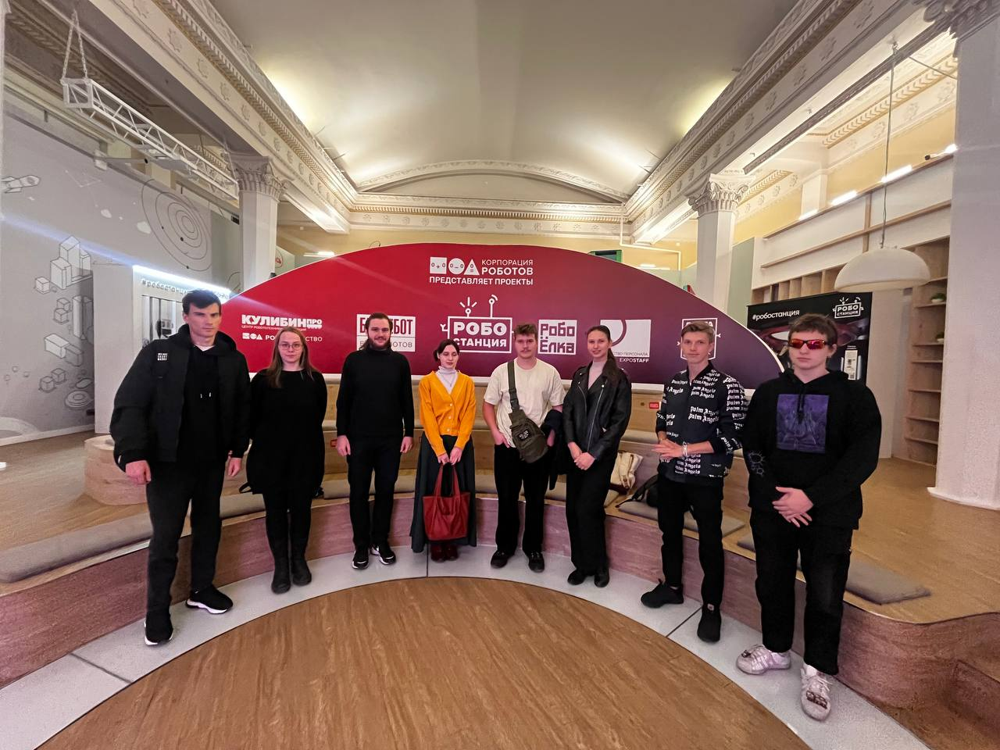

Участники
GAR-5 — это не просто проект, это результат работы сплочённой команды студентов Московского Политеха. Более 20 участников объединили усилия, чтобы придумать, разработать и воплотить интерактивный опыт, который делает музейные выставки интереснее и доступнее для детей. Каждый внёс свой уникальный вклад — от кода до визуала, от сценариев взаимодействия до анимации.
